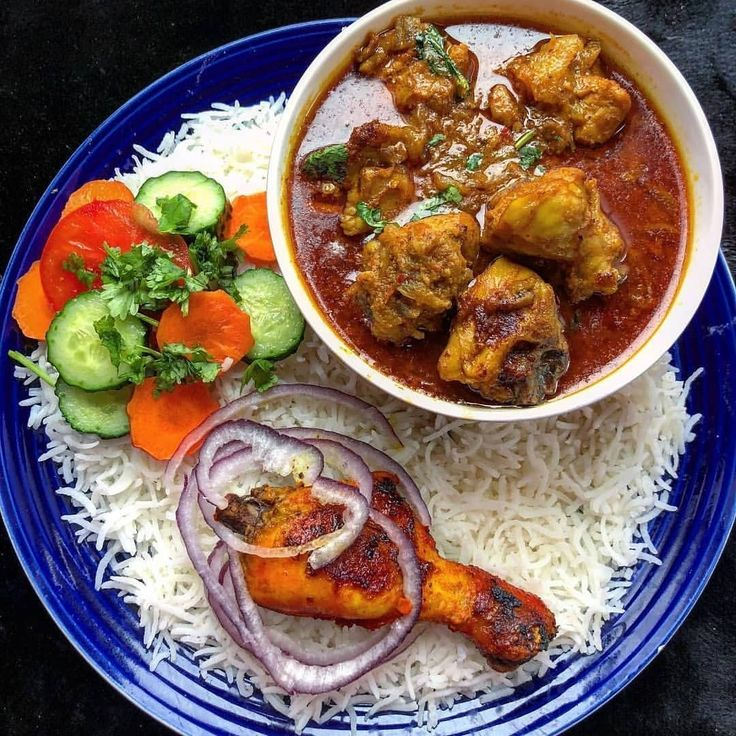
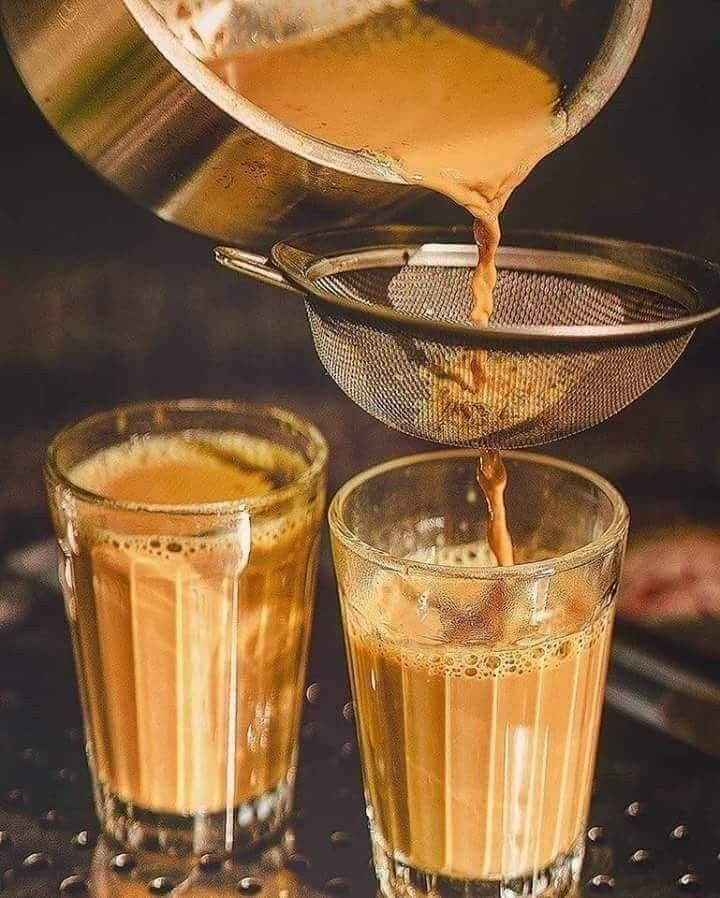

Vegeterian

Non-Vegeterian

Beverages
Discovering Maharashtrian Culinary Treasures
Maharashtrian cuisine, deeply rooted in the cultural heritage of Maharashtra, India, offers a tantalizing array of flavors, aromas, and textures that reflect the diverse landscapes and rich traditions of the region. From spicy curries to sweet delicacies, Maharashtrian cuisine is a delightful fusion of taste and tradition that has captivated food enthusiasts worldwide.

Maharashtrian Masale Bhat is a traditional rice dish from the Indian state of Maharashtra. It is known for its rich and aromatic flavors, which come from a blend of spices known as "Goda Masala.

Also known as Onion Pakoras or Onion Fritters. It's made by coating thinly sliced onions with a spiced gram flour batter and then deep-frying until crispy and golden brown.
It is a flatbread made from whole wheat flour (atta) and flavored with spices like cumin, coriander, and sometimes green chilies.
Chicken Biryani is a flavorful and aromatic rice dish originating from the Indian state of Maharashtra. It combines tender chicken pieces with fragrant basmati rice, spices, and herbs, creating a delicious and satisfying meal
"I'm absolutely thrilled with the service I received! The team went above and beyond to ensure my needs were met. I'll definitely be recommending them to all my friends and family."
John Doe
"I'm blown away by the results! The product I received not only met but exceeded my expectations. It's rare to find a company that truly cares about its customers, but this one does."
Jane Smith